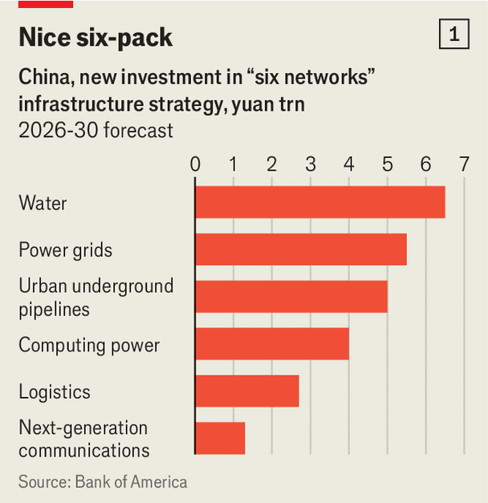
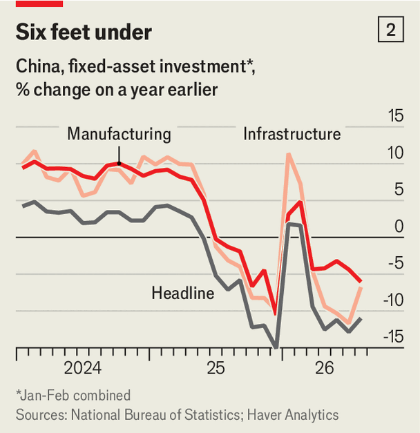

中国对宏大的公共工程并不陌生。为保护王朝免受蛮族入侵而构思的起伏城墙，至今仍是世界奇观。「你不得不承认，这是一道伟大的墙，」理查德·尼克松 1972 年访问时说道。
为了防范另一种危险——经济停滞和通缩——中国把信心寄托于新的基础设施奇迹。它可能在未来五年花费 25 万亿元（3.7 万亿美元）建设政府所说的「六大网络」：水（包括水库和运河）、电（如智能电网）、算力（数据中心）、通信（第五代和第六代移动通信）、物流和城市管网。
「六网」在 7 月被中共最高决策机构政治局重点提出，它要求规划者和官僚们抓紧行动。9 月 29 日，央行宣布为「六网」贷款提供更便宜的融资。国有券商申万宏源的分析师已经挑出一组股票（自然是六只）作为政府投资狂潮的受益者。
这笔计划中的支出，相当于从现在到 2030 年中国累计 GDP 的约 3%，既是雄心的标志，也是不安的标志。据申万宏源，它将奠定「大国竞争的硬件基础」。中国领导人想建设的未来经济——那些「中国吹」喜欢直播的机器人、无人机和自动驾驶汽车——需要大量水冷、廉价供电的算力和通信能力来支撑。
这数万亿元的支出，也将有助于填补国内需求中一个令人不安的缺口。而且由于其中很大一部分资金将来自借贷，「六网」应能吸收部分过剩储蓄，缩小中国的贸易顺差，为一个更平衡的世界经济作出贡献。
「六网」中的许多内容，在中国南方沿海珠江口的横琴岛上都能看到。这里曾是滩涂、红树林沼泽和渔村，如今站在城市发展的前沿。至少当地国企大横琴集团一位快言快语的员工是这么说的。她站在地下五米处一条灯火通明、向远处弯曲延伸的混凝土隧道里。「中国各地都有人来看这个，」她说，一边用激光笔扫过沿隧道墙壁整齐排布的水管、电线和光纤。
运营这套隧道网络的大横琴集团称它为「地下长城」。换个说法，就是智能管道工程。在多数中国城市飞速扩张的过程中，市政管线杂乱蔓延。把它们全部穿进一条照明良好、易于进入的隧道，横琴解决了两个问题。它让地面世界免受线缆纠缠，也让人无需挖开道路、阻断交通就能轻松维修地下管线。
这类综合管廊并不新鲜。沃尔特·迪士尼就建过它们，来隐藏维持其乐园运转的所有凌乱东西。他的管廊帮助保住了童话般的魔力。横琴的管廊保住的则是公共安全（广义上的）。它们布满摄像头、火警和能探测危险泄漏的传感器。其中两条光纤为武警传输数据（它们被方便地标为「海岛监控」）。这些隧道还能帮助疏导洪水——在中国常受台风袭击的沿海地区，这是个大问题。
中国已有 7700 公里（4800 英里）这类隧道，尽管并非都像横琴的这么漂亮。它还有一个更大的常规管网——输送燃气、水、供热或污水。未来五年，它计划花 5 万亿元建设或改造 77 万公里这样的管网。如果拉直延伸，这道地下长城能从地球铺到月球再返回。
管网甚至还不是中国「六网」购物清单上最贵的项目（见图表 1）。它计划在电力上花更多（5.5 万亿元），在水上花得最多（6 万亿元）。电力项目将帮助其电网应对太阳能和风能的反复无常。目标是：用电池储存多余电力，用特高压线路把电输送很远，并用算法更高效地管理它。

chart: the economist
水利支出包括一些项目：通过修复横琴已恢复的红树林这类「活防波堤」，保护南方城市免遭洪水。它也涵盖一些毫不谦虚的计划（早已在进行）——从长江调水、往高处泵送，以解中国干旱北方城市之渴。
中国不满足于把巨量水从南调到北，还要把数据之河从东送到西。其沿海城市拥有产生并依赖海量数据的高科技产业。但中国西部有大型服务器农场所需的廉价土地和充足能源。因此中国计划把十个数据中心集群中的六个，建在宁夏、甘肃等贫穷的西部地区。
中国新增的算力将耗资约 4 万亿元。它还将花 2.7 万亿元在物流上，改善一个平均每分钟把 5000 多万吨货物运送 1 公里的网络。另外至少 1.3 万亿元将投入 5G 通信基站，以及第六代移动通信的研发和部署——后者将利用低轨道卫星。
这些巨款会花得好吗？除了建造世界奇观，中国也建了大量通往无处之桥和穷乡僻壤的泡影工程。据理查德·赫德为世界银行所作的计算（不含电力和电信网络），早在 2013 年，中国政府资本和基础设施存量就超过 GDP 的 84%。这个百分比当时已与美国相当。此后肯定又增长了。
因此一些分析师担心重复项目之间的「重复建设和同质化竞争」。新资金中会有多少浪费在通往无处之网上？中共对危险并非视而不见。其领导人习近平是在所谓「4 万亿刺激」（实际上是在 27 个月里增加了近 9.5 万亿的借贷）之后上台的。那轮挥霍把经济从 2007-09 年全球金融危机中救了出来，但也让相互竞争的地方政府背上了昂贵的面子工程和「隐性债务」——由专门设立的地方政府融资平台持有的表外负债。
2017 年习近平说，地方官员将对他们造成的政府债务承担「终身责任」。研究公司龙洲经讯的何伟指出，他们可能因糟糕的投资决策「在事后多年仍被追查」。财政部夸口在 2023 年对 12 个负债深重的省份的官员实施了「高压监管」。在明年党的领导班子重大调整之前，审查可能再度加强。
也有其他理由预期这一次的白象工程会更少。美国银行的乔虹认为，与过去的基础设施挥霍相比，这轮投资将用更少水泥、更多电路。许多项目是对现有结构的升级——比如给管网加装传感器——而不只是多建。它们是经济学家所说的内涵式增长（而非外延式增长）的例子。
在水利、排污和其他管网上的支出，也补上了市政发展长期存在的一块短板——一种中国产能不足的情况。在夏季，致命的洪水甚至威胁到首都北京。8 月，数千名老人从易受台风「海豚」带来的暴雨侵袭的养老机构被转移。「过去，对路面之上建了什么关注可能太多，对地下关注得不够，」乔虹说。
政府认为这些投资加起来的价值超过各部分之和。电力、水利和通信网络将为算力集群供电、降温并提供数据。这些集群反过来将训练人工智能模型，而后者能帮助从电网中榨出更多电力。AI 可以更好地预测消费需求的峰谷，预判风能、太阳能和水电供应的中断。训练良好的模型还将帮助管理不断壮大的无人机、机器人和自动驾驶车队——它们正在补充中国的物流网络。
在这些长远愿景之下，更切近的宏观经济忧虑正在推动事情前进。4 月，政治局说中国将在「条件成熟」之处启动大型工程项目。如今果实似乎已沉甸甸地挂在藤上。9 月 28 日，国务院表示「六网」实施方案应尽快启动。政府的估算表明，25 万亿元中的 7 万亿元可能在第一年花出。中国的政策性银行——按国家优先事项发放贷款——已经开始提供 8000 亿元的融资。
为什么紧迫？中国出口的异常强劲（服务外国客户）掩盖了国内需求的令人担忧的匮乏。世界其他地方或许在「中国吹」，但中国消费者情绪更为收敛。8 月社会消费品零售总额名义同比增长仅 0.4%。消费者信心指数低到令人惊讶政府还在发布它。城镇青年失业率在 2023 年糟糕到政府真的停止发布，如今再度逼近 19%，即便新的调整后数据已把找工作的学生排除在外。
中国家庭过去曾用对房地产的热衷投资支出来补充其有限的消费支出。但自 2021 年房地产泡沫破裂以来，更多储蓄流入了银行存款、证券等。五年前，家庭财富中金融资产（相对于房产）仅占 31%。据高盛估算，如今这一比重约为 45%。金融体系正难以把这些钱用出去。8 月人民币贷款同比仅增长 4.9%。对家庭的贷款（如房贷）则下降了。
中国现在还面临一个不那么熟悉的供需缺口（见图表 2）。据追踪「固定」资产（即不含库存商品之类）支出的官方数据，制造业和传统基础设施投资大幅下滑。这些数字惨淡到让许多分析师挠头。中国的政府数据常因描绘出美化的图景而招致怀疑。相比之下，这些数字看起来糟得不像是真的。

chart: the economist
不过其他来源也显得黯淡。比如，政府的「一般」预算显示上半年基础设施支出下降。而流入另一个财政池——政府性基金（通常收取土地出让收入并投入建设）——的钱也在变慢。与此同时，地方政府忙于化解隐性债务、从陷入困境的开发商手中购买闲置土地、清偿积压的供应商欠款。美国银行认为，这场「财政紧缩」是基建放缓的主要元凶。
如果内需的这种疲弱持续下去，中国很容易重新滑入通缩。如果对其出口的需求因更多保护主义或美国 AI 投资热潮放缓而动摇，这种担忧将变得尖锐。想象类似的需求缺口，约翰·梅纳德·凯恩斯在 1942 年曾敦促政府准备一份充足的公共工程清单，在经济其余部分疲弱时加速推进、在强劲时放慢。他在一次广播讲话中说，这些蓝图「可以像我们的工程师、建筑师和社会规划者所能构想的那样雄心勃勃、辉煌壮丽」。「六网」正是中国对同一挑战的回答。它提供了价值 25 万亿元的雄心勃勃的蓝图，中央政府可在必要时实施以支撑经济。「取决于政策制定者对需要多少的评估，他们会把旋钮转得稍快或稍慢一点，」乔虹说。
在那次广播讲话中，凯恩斯也谈到了「金融的噩梦」。这些雄心将如何埋单？中国过去的基础设施繁荣依赖卖地和表外融资平台筹集的隐性债务。那种模式对北京来说已不再可行，也不再政治上可容忍。在死气沉沉的房地产市场中，土地再也带不来过去的收入。而地方政府融资平台的财务腾挪空间也比以前更小。中国央行行长潘功胜声称，其中 70% 已被关闭，或转为没有地方政府担保的商业实体。
因此「六网」的融资方式将不同。资金将来自中央政府、它的一些知名国有企业，以及它为地方政府批准的「专项债」。中国两大电网公司计划在未来五年合计在电网上投入 5 万亿元。三大电信运营商打算仅在 12 个月内合计投入约 2600 亿元。
中国的政策性银行也将扮演突出角色。它们的贷款被视为所资助项目的「第一损失」权益资本。通过承担部分风险，这些股份应能让项目从商业银行筹集更多资金——甚至多出四五倍。
与上一轮基础设施繁荣相比，这轮融资应当更便宜。中国的过剩储蓄和异常缺乏「投资饥渴」，意味着利率低得惊人。中央政府如今能以不到 1.7% 的利率借十年期的钱——而这个经济仍以约 5% 的名义增速增长。当世界其他地方应对通胀和飙升的债券收益率时，中国仍生活在一些经济学家所称的「觉醒宏观」世界里。在那个世界里，政府觉得自己可以靠花钱摆脱麻烦，靠增长摆脱由此产生的债务。
有了这样的金融肌肉，「六网」的雄心蓝图应能为中国经济筑底。通过前置支出，中国可以确保实现今年 4.5-5% 的增长目标。它对更长期增长的贡献有多大，取决于两个棘手问题的答案：「六网」会提高生产率吗？以及中国本来无论如何会在基础设施上花多少？
怀疑者会指出，「六网」这个标签比它现在所指的一些计划要新。中国的大型项目常常如此。2013 年启动的全球性贸易投资计划「一带一路」，以及习近平十年后开始力推的「新质生产力」（高科技生产率提升），都曾遭到同样的批评。中国如今展示的这六个新瓶里，装着不止一两杯旧酒。
几位分析师把 25 万亿元的支出计划与过去五年在类似类别上的花费作了比较。比如，它未来五年为水利项目划拨的巨款（6 万亿元）与过去五年的花费相当。但这些计算也表明，中国可能可以在电网上多投约 20%、在通信上多投 3%、在算力上多投约 300%。
中国领导人希望这笔新支出能带来高科技生产率奇迹。他们相信，「六网」将支撑数量相当的「新兴支柱」产业：集成电路、航空航天、生物医药、新型储能、机器人和「低空经济」（包括无人机）。他们还热衷于培育另外六个更具投机性的「未来产业」，包括量子技术、核聚变、生物制造、绿氢、脑机接口、具身智能和 6G 移动通信。
其中一些可能失败。前沿产业的失败率必然很高。因此上游基础设施的回报可能低得令人失望。但正如凯恩斯无疑会指出的：失业的回报更糟。
通过缓解国内需求缺口，中国的基础设施推进也可能提升其国际地位。在其他条件相同的情况下，额外支出将抬升国内价格、吸收本可出口的商品，从而缩小中国的贸易顺差。这对全球经济有利。它也可能有助于基于规则的国际商业事业——后者一直难以应对如此庞大、失衡的一个参与者。尽管中国如此强调电信、算力、电力等等，它的繁荣最终仍要归功于更大的国际贸易网络。如果这 25 万亿元能浇灭当下世界各地燃烧的部分保护主义之火，那这钱就花得值。
中国一些贸易伙伴的领导人将于 11 月到深圳出席亚太经合组织峰会。也许这些贵宾可以跨过珠江口，去横琴看看那道「地下长城」。如果这类项目能帮助重振中国增长、再平衡世界经济、阻止贸易战，你就不得不承认：这些确实是伟大的管道。